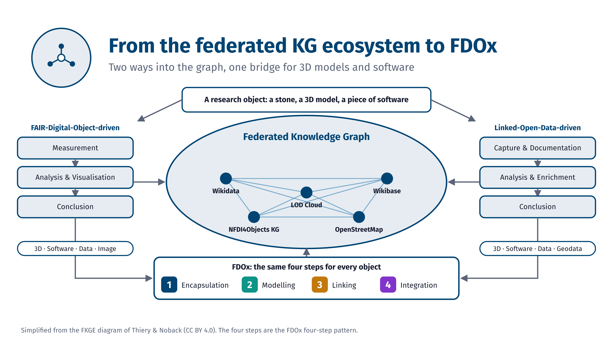
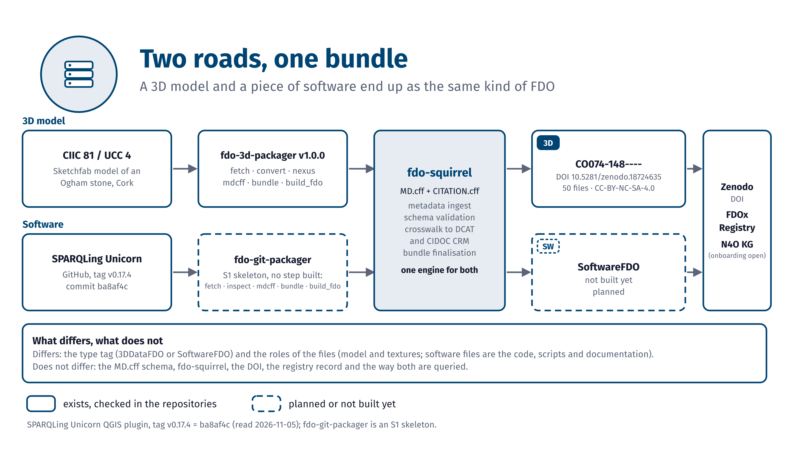
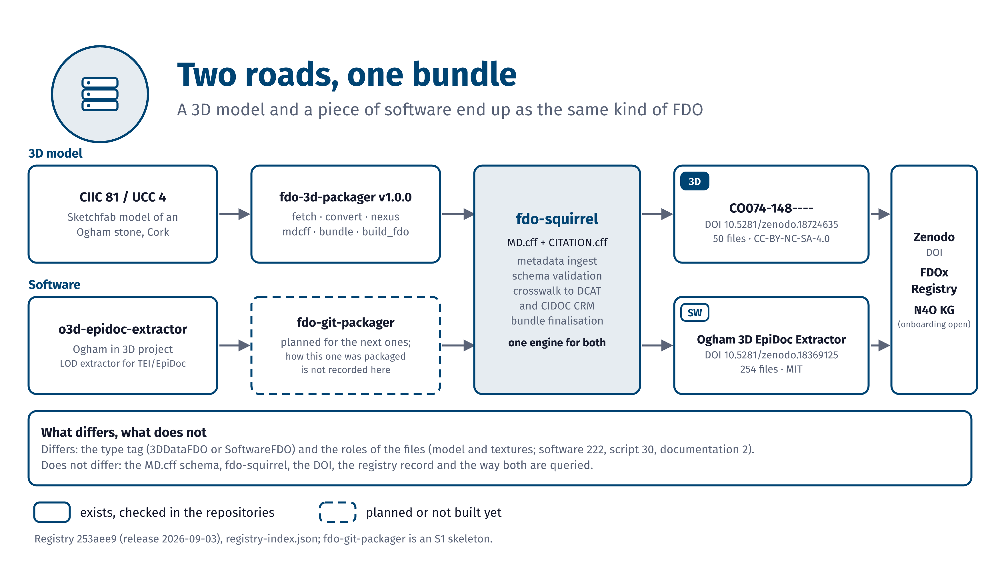
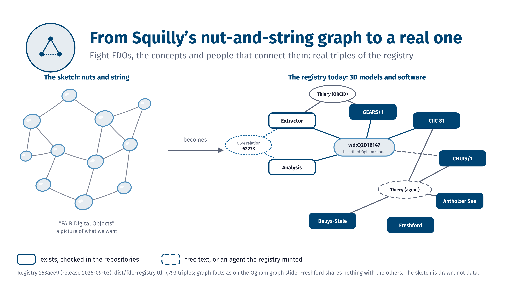

The story: from the FKGE to FDOx
Slides that lead from the federated knowledge graph ecosystem to FDOx, for 3D models and software.
Draft, as of 2026-11-05. These graphics are drafts for the ArcheoFOSS 2026 talk. Dashed outlines mark what is planned, solid outlines what exists.
Draft, as of 2026-11-05

ST.1From the federated KG ecosystem to FDOx: the FDO-driven and the LOD-driven way into the graph, with the four FDOx steps as the bridge for 3D models and software.
FDOx-squirrel, fdox-visuals (Florian Thiery, LEIZA). Code: MIT licence. Simplified from the FKGE diagram of Thiery & Noback (CC BY 4.0).


Draft, as of 2026-11-05

ST.2Two roads, one bundle: CIIC 81 (3D) and the SPARQLing Unicorn plugin (software, planned) meet in the same fdo-squirrel engine.
FDOx-squirrel, fdox-visuals (Florian Thiery, LEIZA). Code: MIT licence. CIIC 81: registry 253aee9. SPARQLing Unicorn: tag v0.17.4 (ba8af4c). fdo-git-packager is a skeleton; the software FDO is not built yet.


Draft, as of 2026-11-05

ST.3Two roads, one bundle: CIIC 81 (3D) and the finished Ogham 3D EpiDoc Extractor (software) end up as the same kind of FDO.
FDOx-squirrel, fdox-visuals (Florian Thiery, LEIZA). Code: MIT licence. Registry 253aee9 (release 2026-09-03). fdo-git-packager is a skeleton; how the extractor was packaged is not recorded here.


Draft, as of 2026-11-05

ST.4From Squilly’s nut-and-string graph to a real one: eight FDOs, the concepts and people that connect them.
FDOx-squirrel, fdox-visuals (Florian Thiery, LEIZA). Code: MIT licence. Left: drawn sketch, not data. Right: registry 253aee9 (release 2026-09-03), 7,793 triples.